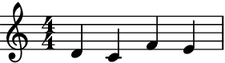
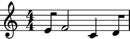
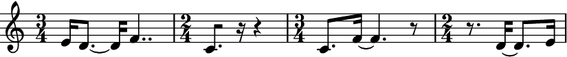
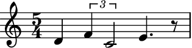
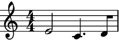
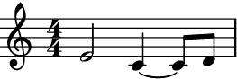

Shuffler¶
- class auxjad.Shuffler(contents: abjad.score.Container, *, pitch_only: bool = False, preserve_rest_position: bool = False, disable_rewrite_meter: bool = False, omit_time_signatures: bool = False, boundary_depth: Optional[int] = None, maximum_dot_count: Optional[int] = None, rewrite_tuplets: bool = True, process_on_first_call: bool = True, prettify_rewrite_meter: bool = True, extract_trivial_tuplets: bool = True, fuse_across_groups_of_beats: bool = True, fuse_quadruple_meter: bool = True, fuse_triple_meter: bool = True, swap_limit: Optional[int] = None)[source]¶
Takes an
abjad.Container(or child class) and shuffles or rotates its logical ties or pitches. When shuffling or rotating pitches only, tuplets are supported, otherwise tuplets are not supported.- Basic usage:
Calling the object will output a shuffled selection of the input container.
>>> container = abjad.Container(r"c'4 d'4 e'4 f'4") >>> abjad.show(container)

>>> shuffler = auxjad.Shuffler(container) >>> notes = shuffler() >>> staff = abjad.Staff(notes) >>> abjad.show(staff)
>>> notes = shuffler() >>> staff = abjad.Staff(notes) >>> abjad.show(staff)

To get the result of the last operation, use the property
current_window.>>> notes = shuffler.current_window >>> staff = abjad.Staff(notes) >>> abjad.show(staff)
Calling the object outputs the same result as using the method
shuffle().>>> notes = shuffler.shuffle() >>> staff = abjad.Staff(notes) >>> abjad.show(staff)
Warning
Unlike the other classes in Auxjad, the very first call of an instance of this class will already process the initial container. To disable this behaviour and output the initial container once before shuffling or rotating it, initialise the class with the keyword argument
process_on_first_callset toFalse.>>> container = abjad.Container(r"c'4 d'4 e'4 f'4") >>> shuffler = auxjad.Shuffler(container, ... process_on_first_call=False, ... ) >>> notes = shuffler() >>> staff = abjad.Staff(notes) >>> abjad.show(staff)

len():Applying the
len()function to the shuffler will return the number of logical ties ofcontents.>>> container = abjad.Container(r"c'4 d'4 e'4 f'4 ~ | f'2 g'2") >>> shuffler = auxjad.Shuffler(container) >>> len(shuffler) 5
Do note that consecutive rests are considered as a single logical tie, so in the example below the
len()function returns5and not6. When shuffling or rotating logical ties, consecutive rests are also shuffled and rotated together.>>> container = abjad.Container(r"c'8. d'4 r8 r8. e'16 f'8.") >>> shuffler = auxjad.Shuffler(container) >>> len(shuffler) 5
- Arguments and properties:
This class has many keyword arguments, all of which can be altered after instantiation using properties with the same names as shown below. Setting
pitch_onlytoTruewill enable pitch mode; by default, this class shuffles and rotates logical ties, but in pitch mode only pitches are shuffled or rotated. By settingpreserve_rest_positiontoTruethe shuffle and rotation operations will not change the position or duration of rests.disable_rewrite_meterdisables theabjad.Meter.rewrite_meter()mutation which is applied to the container after every call, andomit_time_signatureswill remove all time signatures from the output (both areFalseby default). The propertiesboundary_depth,maximum_dot_count, andrewrite_tupletsare passed as arguments toabjad.Meter.rewrite_meter(), see its documentation for more information. By default, calling the object will first return the original container and subsequent calls will process it; setprocess_on_first_calltoTrueand the shuffling process will be applied on the very first call.>>> container = abjad.Container( ... r"\time 3/4 c'4 d'4 e'4 \time 2/4 f'4 g'4" ... ) >>> shuffler = auxjad.Shuffler(container, ... pitch_only=False, ... preserve_rest_position=True, ... disable_rewrite_meter=False, ... omit_time_signatures=True, ... boundary_depth=0, ... maximum_dot_count=1, ... rewrite_tuplets=False, ... process_on_first_call=True, ... swap_limit=3, ... ) >>> shuffler.pitch_only False >>> shuffler.preserve_rest_position True >>> shuffler.disable_rewrite_meter False >>> shuffler.omit_time_signatures True >>> shuffler.boundary_depth 0 >>> shuffler.maximum_dot_count 1 >>> shuffler.rewrite_tuplets False >>> shuffler.process_on_first_call True >>> shuffler.swap_limit 3
Use the properties below to change these values after initialisation.
>>> shuffler.pitch_only = True >>> shuffler.preserve_rest_position = False >>> shuffler.disable_rewrite_meter = True >>> shuffler.omit_time_signatures = False >>> shuffler.boundary_depth = 1 >>> shuffler.maximum_dot_count = 2 >>> shuffler.rewrite_tuplets = True >>> shuffler.process_on_first_call = False >>> shuffler.swap_limit = None >>> shuffler.pitch_only True >>> shuffler.preserve_rest_position True >>> shuffler.disable_rewrite_meter True >>> shuffler.omit_time_signatures False >>> shuffler.boundary_depth 1 >>> shuffler.maximum_dot_count 2 >>> shuffler.rewrite_tuplets True >>> shuffler.process_on_first_call False >>> shuffler.swap_limit None
pitch_only:By default, the shuffling operation will shuffle logical ties:
>>> container = abjad.Container(r"c'8. d'4 r8 r8. e'16 f'8.") >>> shuffler = auxjad.Shuffler(container) >>> notes = shuffler() >>> staff = abjad.Staff(notes) >>> abjad.show(staff)

Setting
pitch_onlytoTrueenables pitch mode, so only pitches are shuffled (and not durations). Note how in the example below the duration of each leaf is the same as the input container.>>> container = abjad.Container(r"c'8. d'4 r8 r8. e'16 f'8.") >>> shuffler = auxjad.Shuffler(container, pitch_only=True) >>> notes = shuffler() >>> staff = abjad.Staff(notes) >>> abjad.show(staff)
Note
Altering the value of
pitch_only: will replace the originalcontents: with the contents ofcurrent_window. Note how in the example below, the shuffled leaves in measure 3 comes from the previous measure and not from the initialcontents:.>>> container = abjad.Container(r"c'4.. d'16 e'4. f'8") >>> shuffler = auxjad.Shuffler(container, pitch_only=True) >>> notes = shuffler.shuffle_n(2) >>> staff = abjad.Staff(notes) >>> shuffler.pitch_only = False >>> notes = shuffler.shuffle_n(2) >>> staff.append(notes) >>> auxjad.mutate.remove_repeated_time_signatures(staff[:]) >>> abjad.show(staff)

swap_limit:The attribute
swap_limitcan be used to set the number of times that pairs of elements are swapped on a single invocation of the shuffling process. Setswap_limittoNoneto not limit the shuffling process.>>> container = abjad.Container(r"c'8 d'8 e'8 f'8 g'8 a'8 b'8 c''8") >>> shuffler = auxjad.Shuffler(container, ... swap_limit=1, ... ) >>> notes = shuffler.shuffle_n(3) >>> staff = abjad.Staff(notes) >>> abjad.show(staff)
rotate():Besides shuffling, logical ties and pitches can also be rotated using the
rotate()method. Similarly to shuffling, it can be applied to logical ties or pitches only depending on the propertypitch_only.>>> container = abjad.Container( ... r"\time 3/4 c'16 d'8. ~ d'4 e'4 r4 f'4 ~ f'8.. g'32" ... ) >>> shuffler = auxjad.Shuffler(container) >>> notes = shuffler.rotate() >>> staff = abjad.Staff(notes) >>> abjad.show(staff)
>>> container = abjad.Container( ... r"\time 3/4 c'16 d'8. ~ d'4 e'4 r4 f'4 ~ f'8.. g'32" ... ) >>> shuffler = auxjad.Shuffler(container, pitch_only=True) >>> notes = shuffler.rotate() >>> staff = abjad.Staff(notes) >>> abjad.show(staff)
This method can also take the optional parameters
n_rotationsandanticlockwise. The first is anintsetting the number of rotations applied to the material, and the second is aboolsetting the direction of the rotation (defaultFalse).>>> container = abjad.Container( ... r"\time 3/4 c'16 d'8. ~ d'4 e'4 r4 f'4 ~ f'8.. g'32" ... ) >>> shuffler = auxjad.Shuffler(container, pitch_only=True) >>> notes = shuffler.rotate(n_rotations=2, anticlockwise=True) >>> staff = abjad.Staff(notes) >>> abjad.show(staff)
preserve_rest_position:If
preserve_rest_positionis set toTrue, the positions of all rests will remain the same after either shuffling and rotation. In pitch mode (whenpitch_onlyis set toTrue), this means that only the pitched notes will be shuffled or rotated, while the rests remain in the exact same place.>>> container = abjad.Container(r"c'8. d'4 r8 r8. e'16 f'8.") >>> shuffler = auxjad.Shuffler(container, ... pitch_only=True, ... preserve_rest_position=True, ... ) >>> notes = shuffler() >>> staff = abjad.Staff(notes) >>> abjad.show(staff)
In logical ties mode, the rests will remain at the same index and will have the same total duration as before, but their position in the measure might vary since the duration of the pitched logical ties preceding it might change.
>>> container = abjad.Container(r"c'8. d'4 r8 r8. e'16 f'8.") >>> shuffler = auxjad.Shuffler(container, preserve_rest_position=True) >>> notes = shuffler() >>> staff = abjad.Staff(notes) >>> abjad.show(staff)
disable_rewrite_meter:If
disable_rewrite_meteris set toTrue, then the automatic behaviour of rewriting the leaves according to the meter is disabled.>>> container = abjad.Container(r"c'4 d'8 e'8 f'2") >>> shuffler = auxjad.Shuffler(container, ... disable_rewrite_meter=True, ... ) >>> notes = shuffler() >>> staff = abjad.Staff(notes) >>> abjad.show(staff)
shuffle_n()androtate_n():To output several shuffled containers at once, use the methods
shuffle_n()androtate_n(), inputting the desired number of iterations.rotate_n()can also take the optional argumentsn_rotationsandanticlockwise, similarly torotate().>>> container = abjad.Container(r"c'4 d'8 e'4. f'8. g'16") >>> shuffler = auxjad.Shuffler(container) >>> notes = shuffler.shuffle_n(2) >>> staff = abjad.Staff(notes) >>> abjad.show(staff)
>>> container = abjad.Container(r"c'4 d'8 e'4. f'8. g'16") >>> shuffler = auxjad.Shuffler(container) >>> notes = shuffler.rotate_n(2) >>> staff = abjad.Staff(notes) >>> abjad.show(staff)
omit_time_signatures:To disable time signatures altogether, initialise this class with the keyword argument
omit_time_signaturesset toTrue(default isFalse), or change theomit_time_signaturesproperty after initialisation.>>> container = abjad.Container(r"\time 3/4 c'16 d'4.. e'4 | r4 f'2") >>> shuffler = auxjad.Shuffler(container, ... omit_time_signatures=True, ... ) >>> notes = shuffler() >>> staff = abjad.Staff(notes) >>> abjad.show(staff)
Tip
All methods that return an
abjad.Selectionwill add an initial time signature to it. Theshuffle_n()androtate_n()methods automatically remove repeated time signatures. When joining selections output by multiple method calls, useauxjad.mutate.remove_repeated_time_signatures()on the whole container after fusing the selections to remove any unecessary time signature changes.- Time signature changes:
This class handles time signature changes too:
>>> container = abjad.Container( ... r"\time 3/4 c'8. d'4 r8 r8. \time 2/4 e'16 f'4.." ... ) >>> shuffler = auxjad.Shuffler(container) >>> notes = shuffler.shuffle_n(2) >>> staff = abjad.Staff(notes) >>> abjad.show(staff)
- Tuplet support:
Tuplets are supported when
pitch_onlyisTrue(pitch-only mode).>>> container = abjad.Container( ... r"\time 5/4 r4 \times 2/3 {c'4 d'2} e'4. f'8" ... ) >>> shuffler = auxjad.Shuffler(container, pitch_only=True) >>> notes = shuffler() >>> staff = abjad.Staff(notes) >>> abjad.show(staff)

Error
Tuplets are not supported when
pitch_onlyisFalse(logical tie mode). Using a container with tuplets andpitch_onlyset toTruewill raise aTypeErrorexception.>>> container = abjad.Container( ... r"\time 5/4 r4 \times 2/3 {c'4 d'2} e'4. f'8" ... ) >>> shuffler = auxjad.Shuffler(container) >>> notes = shuffler() TypeError: 'contents' contain one ore more tuplets, which are not currently supported by the shuffle method
- Indicators:
This class can also handle dynamics and articulations.
>>> container = abjad.Container( ... r"<c' e' g'>4--\p d'8-. e'8-. f'4-^\f r4" ... ) >>> shuffler = auxjad.Shuffler(container) >>> notes = shuffler.shuffle_n(3) >>> staff = abjad.Staff(notes) >>> abjad.show(staff)
Tip
The functions
auxjad.mutate.remove_repeated_dynamics()andauxjad.mutate.reposition_clefs()can be used to clean the output and remove repeated dynamics and unnecessary clef changes.Warning
Do note that some elements that span multiple notes (such as ottava indicators, manual beams, etc.) can become problematic when notes containing them are split into two. As a rule of thumb, it is always better to attach those to the music after the fading process has ended. In the case of shuffling logical ties, slurs and hairpins can also become a problem, since their start and end position can shift around. Dynamics are shuffled together with their leaves, so the initial leaf may lack a dynamic marking.
contents:Use the property
contentsto get the input container upon which the shuffler operates. Notice thatcontentsremains invariant after any shuffling or rotation operations (usecurrent_windowfor the transformed selection of music).contentscan be used to change theabjad.Containerto be shuffled.>>> container = abjad.Container(r"c'4 d'4 e'4 f'4") >>> shuffler = auxjad.Shuffler(container) >>> abjad.show(shuffler.contents)

>>> shuffler() >>> abjad.show(shuffler.contents)

>>> shuffler.contents = abjad.Container(r"cs2 ds2") >>> abjad.show(shuffler.contents)

- Tweaking
abjad.Meter.rewrite_meter(): This function uses the default logical tie splitting algorithm from
abjad.Meter.rewrite_meter().>>> container = abjad.Container(r"c'4. d'8 e'2") >>> shuffler = auxjad.Shuffler(container) >>> notes = shuffler() >>> staff = abjad.Staff(notes) >>> abjad.show(staff)
Set
boundary_depthto a different number to change its behaviour.>>> shuffler = auxjad.Shuffler(container, ... boundary_depth=1, ... ) >>> notes = shuffler() >>> staff = abjad.Staff(notes) >>> abjad.show(staff)
Other arguments available for tweaking the output of
abjad.Meter.rewrite_meter()aremaximum_dot_countandrewrite_tuplets, which work exactly as the identically named arguments ofabjad.Meter.rewrite_meter().This class also accepts the arguments
fuse_across_groups_of_beats,fuse_quadruple_meter,fuse_triple_meter, andextract_trivial_tuplets, which are passed on toauxjad.mutate.prettify_rewrite_meter()(the latter can be disabled by settingprettify_rewrite_metertoFalse). See the documentation of this function for more details on these arguments.disable_rewrite_meter:By default, this class uses the
abjad.Meter.rewrite_meter()mutation.>>> container = abjad.Container(r"c'4 d'8 e'8 f'2") >>> shuffler = auxjad.Shuffler(container) >>> notes = shuffler() >>> staff = abjad.Staff(notes) >>> abjad.show(staff)
Set
disable_rewrite_metertoTruein order to disable this behaviour.>>> container = abjad.Container(r"c'4 d'8. e'16 f'2") >>> abjad.show(container)
>>> shuffler = auxjad.Shuffler(container, ... disable_rewrite_meter=True, ... ) >>> notes = shuffler() >>> staff = abjad.Staff(notes) >>> abjad.show(staff)
- Using as iterator:
The instances of this class can also be used as an iterator, which can then be used in a for loop. Note that unlike the methods
shuffle_n()androtate_n(), time signatures are added to each window returned by the shuffler. Use the functionauxjad.mutate.remove_repeated_time_signatures()to clean the output when using this class in this way. It is also important to note that abreakstatement is needed when using this class as an iterator. The reason is that shuffling is a process that can happen indefinitely (unlike some of the other classes in this library).>>> container = abjad.Container(r"\time 3/4 c'4 d'4 e'4") >>> shuffler = auxjad.Shuffler(container) >>> staff = abjad.Staff() >>> for window in shuffler: ... staff.append(window) ... if abjad.get.duration(staff) == abjad.Duration((9, 4)): ... break >>> auxjad.mutate.remove_repeated_time_signatures(staff[:]) >>> abjad.show(staff)
Methods
__call__()Calls the shuffling process, returning an
abjad.Selection__init__(contents, *[, pitch_only, …])Initialises self.
__iter__()Returns an iterator, allowing instances to be used as iterators.
__len__()Returns the number of logical ties of
contents.__next__()Calls the shuffling process for one iteration, returning an
abjad.Selection.__repr__()Returns interpreter representation of
contents.rotate(*[, n_rotations, anticlockwise])Rotates logical ties or pitches of
contents.rotate_n(n, *[, n_rotations, anticlockwise])Goes through
niterations of the pitch shuffling process and outputs a singleabjad.Selection.shuffle()Shuffles logical ties or pitches of
contents.shuffle_n(n)Goes through
niterations of the shuffling process and outputs a singleabjad.Selection.Attributes
Sets the argument
boundary_depthofabjad.Meter.rewrite_meter().The
abjad.Containerto be shuffled.Read-only property, returns the result of the last operation.
When
True, the durations of the notes in the output will not be rewritten by theabjad.Meter.rewrite_meter()mutation.Sets the argument
extract_trivial_tupletsofauxjad.mutate.prettify_rewrite_meter().Sets the argument
fuse_across_groups_of_beatsofauxjad.mutate.prettify_rewrite_meter().Sets the argument
fuse_quadruple_meterofauxjad.mutate.prettify_rewrite_meter().Sets the argument
fuse_triple_meterofauxjad.mutate.prettify_rewrite_meter().Sets the argument
maximum_dot_countofabjad.Meter.rewrite_meter().When
True, the output will contain no time signatures.When
True, only the pitches will be shuffled or rotated while the durations remain the same.When
True, shuffle operations will preserve rest positions and durations.Used to enable or disable the mutation
auxjad.mutate.prettify_rewrite_meter()(defaultTrue).If
Truethencontentswill be processed in the very first call.Sets the argument
rewrite_tupletsofabjad.Meter.rewrite_meter().If
intthen it dictates how instances of random swapping of pairs of elements are applied tocontentsin each iteration.- __call__() → abjad.select.Selection[source]¶
Calls the shuffling process, returning an
abjad.Selection
- __init__(contents: abjad.score.Container, *, pitch_only: bool = False, preserve_rest_position: bool = False, disable_rewrite_meter: bool = False, omit_time_signatures: bool = False, boundary_depth: Optional[int] = None, maximum_dot_count: Optional[int] = None, rewrite_tuplets: bool = True, process_on_first_call: bool = True, prettify_rewrite_meter: bool = True, extract_trivial_tuplets: bool = True, fuse_across_groups_of_beats: bool = True, fuse_quadruple_meter: bool = True, fuse_triple_meter: bool = True, swap_limit: Optional[int] = None) → None[source]¶
Initialises self.
- __next__() → abjad.select.Selection[source]¶
Calls the shuffling process for one iteration, returning an
abjad.Selection.
- property boundary_depth: Optional[int]¶
Sets the argument
boundary_depthofabjad.Meter.rewrite_meter().
- property contents: abjad.score.Container¶
The
abjad.Containerto be shuffled.
- property current_window: abjad.select.Selection¶
Read-only property, returns the result of the last operation.
- property disable_rewrite_meter: bool¶
When
True, the durations of the notes in the output will not be rewritten by theabjad.Meter.rewrite_meter()mutation.
- property extract_trivial_tuplets: bool¶
Sets the argument
extract_trivial_tupletsofauxjad.mutate.prettify_rewrite_meter().
- property fuse_across_groups_of_beats: bool¶
Sets the argument
fuse_across_groups_of_beatsofauxjad.mutate.prettify_rewrite_meter().
- property fuse_quadruple_meter: bool¶
Sets the argument
fuse_quadruple_meterofauxjad.mutate.prettify_rewrite_meter().
- property fuse_triple_meter: bool¶
Sets the argument
fuse_triple_meterofauxjad.mutate.prettify_rewrite_meter().
- property maximum_dot_count: Optional[int]¶
Sets the argument
maximum_dot_countofabjad.Meter.rewrite_meter().
- property omit_time_signatures: bool¶
When
True, the output will contain no time signatures.
- property pitch_only: bool¶
When
True, only the pitches will be shuffled or rotated while the durations remain the same.
- property preserve_rest_position: bool¶
When
True, shuffle operations will preserve rest positions and durations.
- property prettify_rewrite_meter: bool¶
Used to enable or disable the mutation
auxjad.mutate.prettify_rewrite_meter()(defaultTrue).
- property process_on_first_call: bool¶
If
Truethencontentswill be processed in the very first call.
- property rewrite_tuplets: bool¶
Sets the argument
rewrite_tupletsofabjad.Meter.rewrite_meter().
- rotate(*, n_rotations: int = 1, anticlockwise: bool = False) → abjad.select.Selection[source]¶
Rotates logical ties or pitches of
contents.
- rotate_n(n: int, *, n_rotations: int = 1, anticlockwise: bool = False) → abjad.select.Selection[source]¶
Goes through
niterations of the pitch shuffling process and outputs a singleabjad.Selection.
- shuffle() → abjad.select.Selection[source]¶
Shuffles logical ties or pitches of
contents.
- shuffle_n(n: int) → abjad.select.Selection[source]¶
Goes through
niterations of the shuffling process and outputs a singleabjad.Selection.